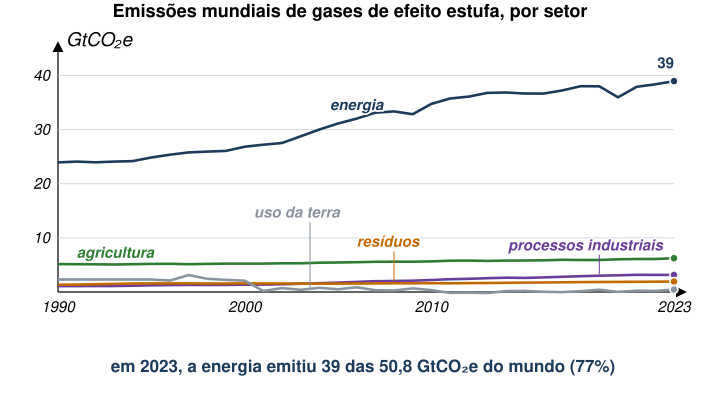
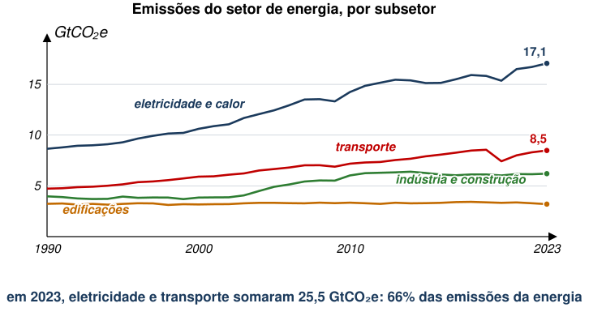
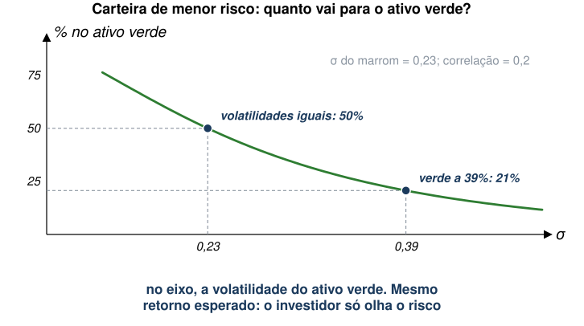
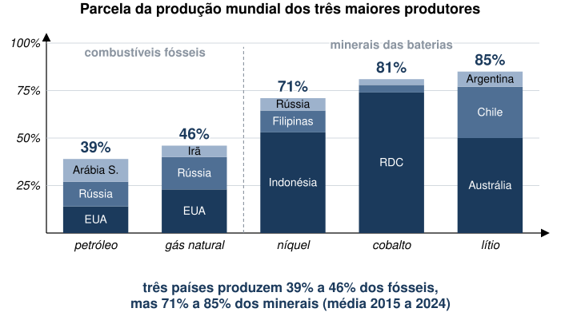
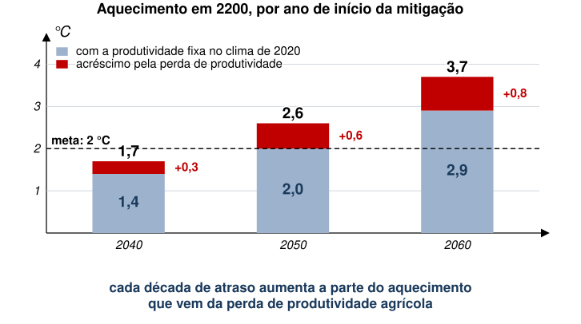

EAE1317 — Economia do Meio Ambiente e dos Recursos Naturais
2026-11-03
Referência: Tietenberg e Lewis, cap. 6
Por que importa?

Fonte: Climate Watch Historical Country Greenhouse Gas Emissions Data (CC BY 4.0). Figura reelaborada a partir dos dados.
Por que importa?

Fonte: Climate Watch Historical Country Greenhouse Gas Emissions Data (CC BY 4.0). Figura reelaborada a partir dos dados.
Por que importa?
Há, também, outras dimensões importantes além da crise climática.
Vale a pena?
| Cenário de emissão líquida zero em 2050 | 2030 | 2040 | 2050 |
|---|---|---|---|
| Danos evitados (agudos e crônicos) | 1,6 | 4,8 | 9,3 |
| Custos da política de mitigação | −0,8 | −0,7 | −1,6 |
| Benefício líquido | 0,7 | 4,1 | 7,7 |
PIB mundial, desvio em relação ao cenário de referência (%). Valores aproximados, lidos do gráfico do FMI a partir de NGFS (2023).
Quanto custa?
| Energia elétrica | Edificações | Transporte |
|---|---|---|
| Geração sem carbono: 1.300 | Reformas: 230 | Recarga nas estradas: 130 |
| Redes: 900 | Bombas de calor: 130 | Aviação: 70 |
| Armazenamento e flexibilidade: 200 | Aquecimento renovável: 140 | Navegação: 40 |
Investimento médio necessário por ano, 2021 a 2050, em US$ bilhões. Fonte: National Public Utilities Council.
Quanto custa?
| Aumenta a dívida | p.p. do PIB | Reduz a dívida | p.p. do PIB |
|---|---|---|---|
| Investimento verde | +22 | Receita de carbono | −26 |
| Juros reais | +9 | Crescimento do PIB | −5 |
| Transferências focalizadas | +7 | ||
| Perda de outras receitas | +7 | ||
| Subsídios verdes | +2 | Dívida/PIB, total | +16 |
Economia emergente representativa, variação acumulada da dívida entre 2023 e 2050. Valores aproximados, lidos do gráfico do FMI (Fiscal Monitor, out. 2023).
Uma questão recorrente sobre energias renováveis é seu custo.
Além disso, há riscos envolvidos.
Hong et al. (2025) estudam a volatilidade de preço para energia renovável, tentando entender sua importância para a transição energética.
Como?
Diferenças-em-Diferenças → firmas que precisaram aumentar share de renováveis (tratadas) e isentas (controles).
| Efeito da exigência de renováveis | Estimativa |
|---|---|
| Volatilidade mensal do preço da eletricidade | +4,3 p.p. ao ano |
| Lucro médio das firmas | não muda (o regulador repassa o custo) |
| Estados com exigência de renováveis (1991 a 2020) | 32, dos quais 14 isentam as municipais |
Números do texto de Hong et al. (2025).
Autores verificam que aumento da volatilidade levou a uma maior percepção de risco, por parte de investidores, para as empresas com exigência de renováveis.
| Medida de risco | Renováveis | Fósseis |
|---|---|---|
| Aumento do spread de crédito das tratadas | +69 a 100 pontos-base | |
| Volatilidade imputada dos ativos | 39% | 23% |
O risco a mais não é repassado ao consumidor: fica com firmas e investidores (Hong et al. 2025).
Em seguida, autores simulam diferentes cenários de produtividade e volatilidade, comparando energias renováveis e não-renováveis.
A alocação ótima de investimento em energia “verde” vai de 19% no cenário base para
Ou seja, risco tem papel importante na alocação ótima de energia renovável.

Conclusão dos autores é de que o risco associado às fontes renováveis pode ser tão relevante quanto sua produtividade para descarbonização.
Referência: Hong, Harrison, Jeffrey D. Kubik, and Edward P. Shore. 2025. Renewable Asset Price Volatility and Its Implications for Decarbonization. NBER Working Paper No. 33789. https://doi.org/10.3386/w33789.
Além de enfrentar desafios relacionados ao custo e à incerteza de fontes renováveis, é preciso pensar na melhor forma de induzir sua adoção.
Bushnell et al. (2022) investigam essa questão na adoção de veículos elétricos.
Variável de interesse: venda de veículos elétricos por habitante, por setor censitário da Califórnia, de 2014 a 2017.
Estratégia de Identificação 1: painel
Estratégia de Identificação 2: descontinuidade na fronteira entre distribuidoras
| Distribuidora (Baía de São Francisco) | Controle | US$ por kWh, 2018 |
|---|---|---|
| PG&E | capital aberto | 0,40 |
| San Francisco (CCSF) | municipal | 0,33 |
| Alameda | municipal | 0,26 |
| Palo Alto | municipal | 0,19 |
| Santa Clara | municipal | 0,12 |
Tarifa residencial, faixa mais alta de consumo. Valores aproximados, lidos da fig. 1 de Bushnell et al. (2022).
Em ambas as estimações, aumento no preço da gasolina tem efeito de 4 a 6 vezes maior na venda de veículos elétricos do que aumento equivalente no preço da energia elétrica.
Ou seja, o comprador dá pouco peso à conta de luz que o carro vai gerar.
No entanto, se custo operacional do carro (preço do “combustível”) aumenta, deveria haver menor demanda.
Autores argumentam que consumidores entendem melhor como o preço da gasolina impacta seu orçamento.
Para política pública, isto é relevante.
Referência: Bushnell, James B., Erich Muehlegger, and David S. Rapson. 2022. Energy Prices and Electric Vehicle Adoption. NBER Working Paper No. 29842. https://doi.org/10.3386/w29842.
Em aulas passadas, imposto e subsídio agiam na mesma margem, com sinais opostos.
Aqui a margem não é a mesma para o consumidor. O preço da gasolina é visto na bomba; o custo da recarga se perde na conta de luz.
Com dados da Califórnia, os autores calculam quanto o governo deveria pagar a quem compra um carro elétrico. A resposta é positiva: vale subsidiar.
O instrumento de preço ótimo soma duas correções:
Externalidade: na Califórnia, o imposto da gasolina já cobre o dano, mas a tarifa de luz fica acima do custo social marginal.
→ Subsidiar o elétrico.
“Erro” do comprador: muitos pagam tarifa maior do que a média, mas subestimam custo do elétrico na conta de energia, o que aumenta compra deste tipo de veículo.
→ Taxar o elétrico.
Saldo do artigo: subsídio de cerca de US$ 200 a 300 por ano.
Carros elétricos precisam de baterias, que, por sua vez, precisam de lítio, níquel e cobalto.
A cadeia tem três elos, todos concentrados: mineração (Austrália, Indonésia, RDC), refino e baterias (empresas chinesas refinam de 65% a 80% e fabricam cerca de 70% das baterias), montadoras.
Domínguez-Iino, Elliott e Hsiao (2026) perguntam: se poucos países controlam esses minerais, como seu poder de mercado afeta a transição?

Dois minerais, lítio (\(\ell\)) e níquel (\(n\)). Duas baterias: \(L\) (LFP) usa só lítio; \(N\) (NMC) usa lítio e níquel, em proporção fixa.
Com fabricação competitiva, o preço da bateria é o custo dos minerais:
\[p_L = p^{\ell}\, r^{\ell}_{L}, \qquad p_N = p^{\ell}\, r^{\ell}_{N} + p^{n}\, r^{n}_{N}\]
As baterias são substitutas: \(\delta_{LN}=\partial d_L/\partial p_N>0\).
\[\frac{\partial d^{\ell}}{\partial p^{n}}=\underbrace{\delta_{LN}\, r^{\ell}_{L}\, r^{n}_{N}}_{(1)\;>\;0}+\underbrace{\delta_{NN}\, r^{\ell}_{N}\, r^{n}_{N}}_{(2)\;<\;0}\]
(1) Substituição: a bateria \(N\) fica mais cara, a demanda migra para \(L\), que usa lítio. A demanda por lítio sobe.
(2) Complementaridade: a bateria \(N\) vende menos. Como ela também usa lítio, a demanda por lítio cai.
Se a soma é positiva, lítio e níquel são substitutos brutos. Se é negativa, são complementos brutos.
Se a Indonésia restringe oferta de níquel para elevar o preço, temos:
| Substitutos brutos | Complementos brutos | |
|---|---|---|
| Preço do lítio | sobe | cai |
| Austrália (lítio) | ganha de carona | perde |
| Interesses dos dois países | alinhados | em conflito |
| Bateria \(L\) (LFP) | encarece | barateia |
Com complementos, a política da Indonésia funciona como um imposto sobre a bateria \(N\) e um subsídio à bateria \(L\). A adoção total cai, mas cai menos.
| Sai do mercado | Lítio | Níquel | Cobalto | Bateria L | Bateria N |
|---|---|---|---|---|---|
| Austrália (50% do lítio) | +107 | −1,1 | −3,7 | +9,5 | +9,5 |
| Indonésia (53% do níquel) | −1,8 | +76 | −3,4 | −0,2 | +3,6 |
| RDC (74% do cobalto) | −6,2 | −3,7 | +865 | −0,6 | +14,1 |
Variação média de preço (%), Domínguez-Iino et al. (2026), tabela 2. Bateria L: LFP; bateria N: NMC e NCA.
O preço do mineral que falta dispara; o dos outros dois cai: é a assinatura empírica da complementaridade.
Sem lítio australiano, as duas baterias encarecem (insumo comum). Sem níquel ou cobalto, a LFP fica até mais barata.
Multinacionais chinesas têm participação em minas de lítio, níquel e cobalto pelo mundo. Controlar vários minerais tem duas forças opostas.
Como os minerais são complementos brutos, a segunda força domina, ainda que por pouco.
Coordenação vertical: a China é a maior compradora de baterias. Mineral caro prejudica as próprias montadoras.
| Quem exerce o poder de mercado | Preço das baterias | Quantidade |
|---|---|---|
| Austrália e Indonésia, cada uma por si | +2,7% | −2,6% |
| Minas chinesas de lítio e níquel, coordenadas | +0,6% | −0,6% |
Valores aproximados, lidos da fig. 15 de Domínguez-Iino et al. (2026).
Cartel chinês é menos prejudicial do que cartel de cada país separadamente.
Possível interpretação:
Referência: Domínguez-Iino, Tomás, Jonathan T. Elliott, and Allan Hsiao. 2026. Critical Minerals, Geopolitics, and the Green Transition. Working paper. https://tdomingueziino.github.io/critical_minerals.pdf.
Mais próximo de casa: transição energética baseada em fontes como etanol ou bagaço de cana.
Há grande expectativa sobre o potencial da biomassa como fonte de energia de baixo carbono, especialmente no Brasil.
Com agravamento da crise climática, retorno das plantações diminui.
Como essa queda de produtividade pode afetar o potencial de redução de carbono da biomassa?
Produção = produtividade × área. Para manter a produção, a área cresce na razão inversa da produtividade: \(A=Q/y\).
| Queda da produtividade | Área necessária |
|---|---|
| 10% | +11% |
| 20% | +25% |
| 30% | +43% |
A área cresce mais que a perda de produtividade; a diferença aumenta com a perda: \(1/(1-0{,}3)=1{,}43\).
Se a área nova vem de floresta, a emissão do desmatamento desconta o carbono que o etanol evitaria.
Mesmo que não haja aumento do desmatamento, é razoável supor que biomassa vai competir por espaço com outras culturas agrícolas.
Se não for possível expandir a área de cana-de-açúcar, potencial redutor de emissões também é impactado.
Xu et al. (2022) estudam essa possibilidade.
Referência: Xu, S., Wang, R., Gasser, T. et al. 2022. Delayed use of bioenergy crops might threaten climate and food security. Nature: 609, 299–306. https://doi.org/10.1038/s41586-022-05055-8.
Os autores simulam bioenergia com captura de carbono (BECCS) a partir de resíduos de milho, trigo e arroz, num modelo climático em que a produtividade agrícola responde à temperatura, ao CO₂ e ao fertilizante.
| Início da mitigação | 2040 | 2050 | 2060 |
|---|---|---|---|
| Aquecimento em 2100 | 2,5 °C | 3,4 °C | 4,2 °C |
| Aquecimento em 2200 | 1,7 °C | 2,6 °C | 3,7 °C |
| Parte devida à perda de produtividade | 0,3 °C | 0,6 °C | 0,8 °C |
Em 2100 os três cenários passam de 2 °C. As emissões negativas dos BECCS trazem o aquecimento de volta abaixo da meta até 2200 só com início em 2040.

Mesmo com a área agrícola expandida para garantir 2,0 Mcal por pessoa por dia em 2030, a oferta média cai de 2,2 para 1,8 Mcal em 2100 (mitigação em 2040).
Mais fertilizante ajuda pouco: o arroz rende seis vezes mais quando o nitrogênio passa de 5 para 100 kg/ha, mas só 12% mais de 100 para 150 kg/ha.
Atrasar a mitigação de 2040 para 2060 eleva de 81 para 90 os países em desenvolvimento abaixo do nível de subnutrição (1,5 Mcal) em 2100.
EAE1317 — Economia do Meio Ambiente e dos Recursos Naturais